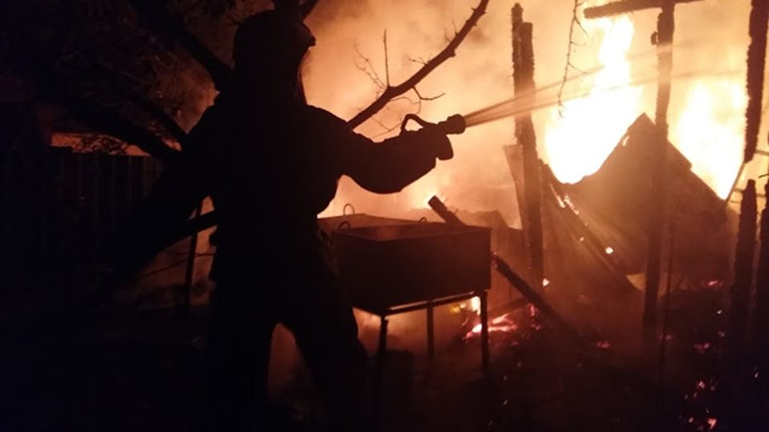
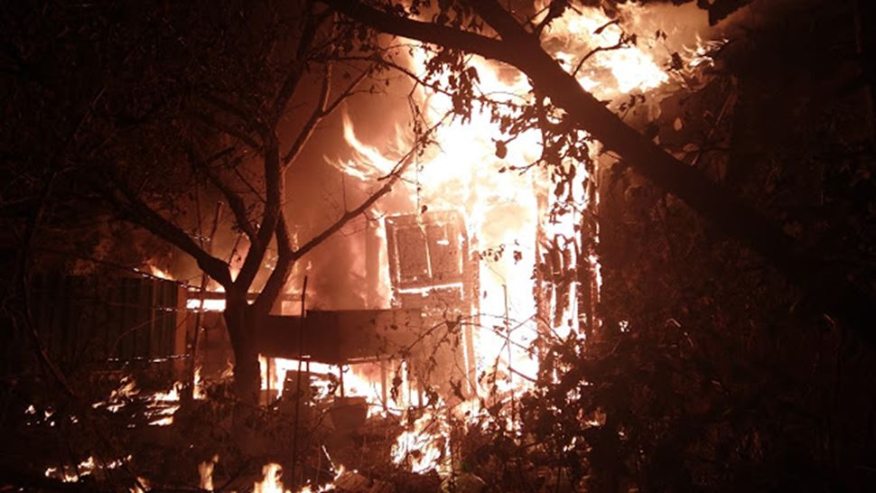
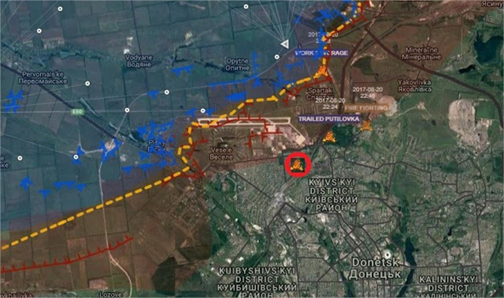
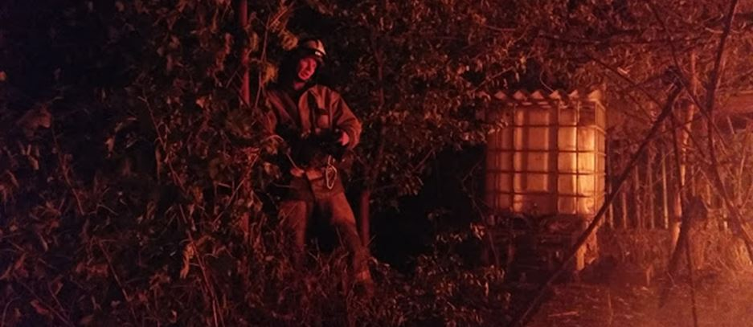

Ce dimanche 20 août 2017, Donetsk a vécu une aggravation des bombardements ukrainiens, principalement en journée dans le secteur de Trudovsky au Sud-Ouest de la ville puis le soir dans son secteur Nord, où des tirs d'artillerie, entre 20h00 et 22h00, ont rempli l'atmosphère du quartier Est d'Oktyabrsky entre Yakolevka et l'aéroport.

UN SOLDAT DU FEU ASSASSINÉ PAR LES UKRAINIENS
En après-midi des bombardements ukrainiens ont frappé le front Ouest de Donetsk provoquant des incendies dans les quartiers résidentiels touchés par les tirs de mortier. Lorsqu'une unité de pompiers du Ministère des Situations d'urgence de la RPD, arrive vers 15h00 au 115, rue Zeleny Gaï elle est aussitôt prise sous le feu de lance-grenades automatiques (AGS) ukrainiens.
Le chef de la 3ème unité d'intervention des pompiers de la DNR a été tué et 2 autres pompiers blessés par les tirs criminels effectués depuis les positions du bataillon paramilitaire « Donbass-Ukraine » alors qu'ils combattaient l'incendie de la maison. Les deux blessés ont été transportés à l'hôpital n°14 du district Petrovski de Donetsk.
Par les hasards de la guerre, alors que nos pensées étaient déjà dirigées vers ces pompiers qui jour et nuit secourent les personnes sous les bombardements, je me suis retrouvé au cœur d'une de leurs interventions après que le quartier où j'habite ait été à nouveau durement bombardé dans la soirée.
Aussi je tiens à travers ce modeste reportage à rendre particulièrement hommage à ces soldats du feu qui témoignent par leur sacrifice de la réalité dramatique de cette guerre amis aussi de la bravoure de ce peuple du Donbass qui est toujours debout et confiant au milieu de ruines !
Les bombardements meurtriers ukrainiens se sont poursuivis toute la journée se déplaçant vers le Nord-Ouest de Donetsk, dans le secteur de Staromikhaïlovka, puis au Nord, sur le front de l'aéroport international et jusque dans le secteur de Yassinovataya.
Une fois encore au cours de ces nouvelles violations du cessez le feu par Kiev, le quartier d'Oktyabrsky n'a pas été épargné par l'artillerie lourde ukrainienne qui a frappé à plusieurs reprises son secteur Est (quartier n°15 dépendant du district de Kievsky) avec des obusiers positionnés au nord de Peski (à l'Est de l'aéroport).
Voici l'extrait d'un journal de bord pour cette période :
20h00 Depuis plus d'une heure duels d'artillerie sur le secteur de l'aéroport, Spartak et Yakolevka. Les ukrainiens utilisent les obusiers déployés au sud d’Avdeevka et au Nord de Peski.
20h30 Les républicains ripostent.
21h00 Arrivée de tirs de l'artillerie lourde ukrainienne dans le secteur de l'aéroport. Dans une rue voisine 2 voitures civiles s'en vont direction Donetsk.
21h30 des obus d'artillerie lourdes frappent en sifflant le secteur où j'habite.

Position du secteur bombardé décrit dans cet article (cercle rouge), mais d'autres zones ont été durement touchées à l'Ouest et au Nord de Donetsk
À ce moment-là je sors à l'extérieur pour essayer de repérer d'où proviennent les tirs et s'ils touchent des maisons habitées. À ce moment précis plusieurs impacts de 122 mm frappent la zone 3 obus explosent du côté de la voie ferrée, entre le ballast et la rue Artemovskaia, et tandis qu'une autre retentit également au milieu du quartier entre Spartak au Nord et Putilovka au Sud.
Une maison, heureusement inhabitée, est touchée à moins de 500 mètres, et elle est très rapidement détruite par l'incendie. Avec les voisins nous fermons les canalisations de gaz qui entourent le brasier et attendons les pompiers...
22h00 les tirs d'obusiers cessent dans le secteur, mais à 500 mètres au Nord, des rafales de mitrailleuses continuent à retentir autour des sentinelles qui veillent aux parapets des tranchées.
Les pompiers du Ministère des Situations d'Urgence de la RPD arrivent rapidement sur les lieux et s'attaquent à l'incendie qui menace les maisons voisines dont certaines sont habitées. Le travail est réalisé rapidement, dans le calme malgré des bombardements qui continuent à proximité. En moins de 30 minutes après leur arrivée, les pompiers parviennent à maîtriser l'incendie avant que de repartir dans la nuit vers d'autres secteurs bombardés.
Cette journée de dimanche a donc été marquée par une reprise sensible des bombardements ukrainiens mais aussi des combats au sol avec notamment une tentative de percée menée par la 57ème brigade d'infanterie ukrainienne dans le secteur de Zhabichevo, un village situé au Nord de Donetsk. Si cette attaque au sol s'est soldée par un nouvel échec des ukrainiens, en revanche leur artillerie a réussi à réaliser des frappes criminelles nombreuses qui ont provoqué plusieurs victimes (bilan provisoire ! 1 tué et 2 blessés chez les pompiers, 1 femme blessée à Yasinovataya) ainsi que des dégâts matériels importants (au moins 6 maisons détruites).
À la veille de la fête nationale de l'indépendance ukrainienne, le régime vacillant de Porochenko semble vouloir offrir une victoire au général Mattis le chef du Pentagone qui viendra assister à la parade de l'OTAN qui est organisée ce 24 août dans les rues de Kiev.
Mais les actes criminels de cette armée ukrainienne qui finalement est capable de tirer efficacement que sur des civils, ne font qu'éclabousser un peu plus de sang et de honte, ce régime de laquais inaptes, servant un mondialisme haineux et essoufflé...
Dans les prochains jours nous pourrons certainement vérifier concrètement la teneur des discussions entre le chef du Pentagone et le Président ukrainien qui vont signer le protocole de livraisons d'armes létales étasuniennes sur le front du Donbass...
Ce n'est pas demain la veille que les soldats du feu de Donetsk pourront se reposer !
Partager cette page